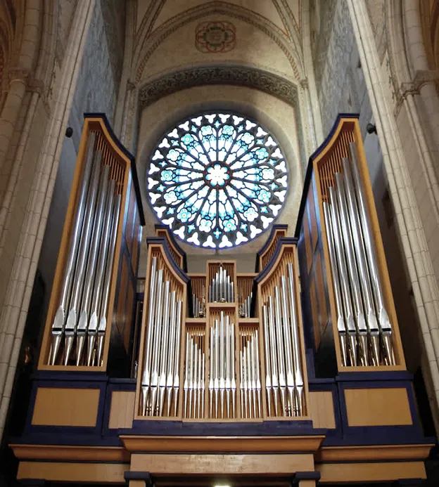
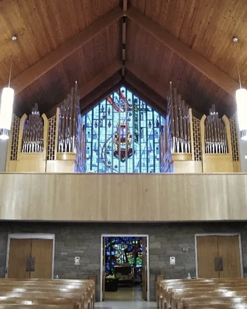
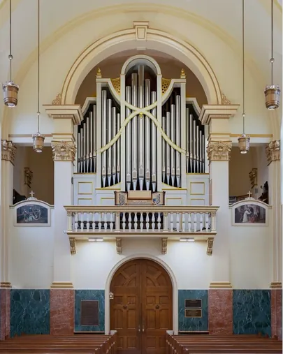
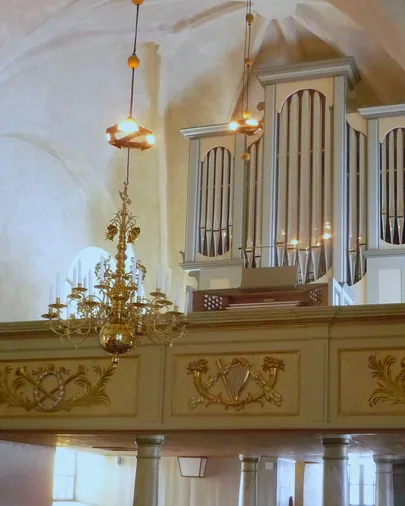
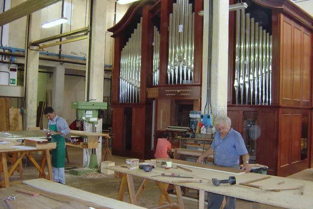

Organi nuovi
Da Padova abbiamo raggiunto negli anni tutti i continenti.

Nel ventunesimo secolo abbiamo aggiunto il Messico, l’Australia, la Svezia, l’Irlanda e la Cina ai Paesi che ospitano i nostri strumenti.

Santa Caterina da Siena, Wayne, Pennsylvania2022 · tre manuali e 37 registri, due consolle · la notizia → 
Notre Dame Seminary, New Orleans2022 · due manuali, cassa laccata in bianco e foglia d’oroin copertina su The Diapason, ottobre 2022 · la notizia → Buckfast Abbey, Devon, Inghilterra2017 · organo del coro, casse di rovere massiccio 
Chiesa parrocchiale di Boteå, Sveziacontratto del 2015 · trasmissione meccanica
- 2023Pershore Abbey, Worcestershire, InghilterraTre manuali e 33 registri, secondo l’abbazia.L’abbazia ↗
Dicono di noi
«I Principali cantano.»
Joyce Jones, concertista, già docente di musica e organista titolare della Baylor University, Waco, Texas
«I registri singoli hanno carattere e personalità, e il pleno ha fuoco e vitalità.»
Diane Bish, concertista, già direttrice della musica e organista, Coral Ridge Presbyterian Church, Fort Lauderdale, Florida
«Questo grande strumento non è ancora stato superato!»
Frederick Swann, concertista, già direttore della musica e organista, Crystal Cathedral (oggi Christ Cathedral), Garden Grove, California
